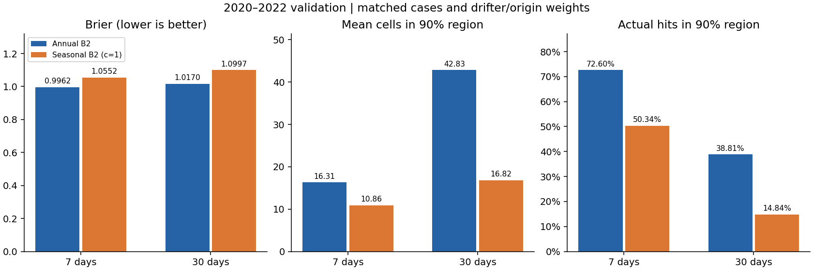
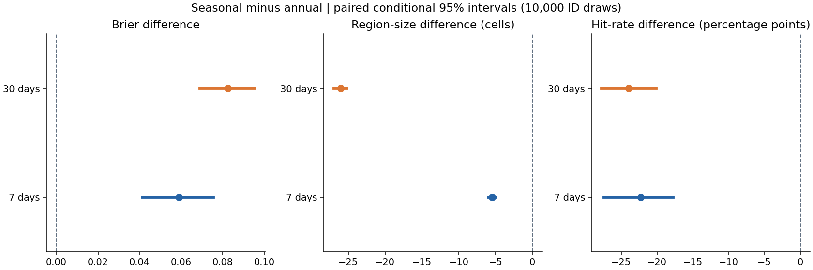
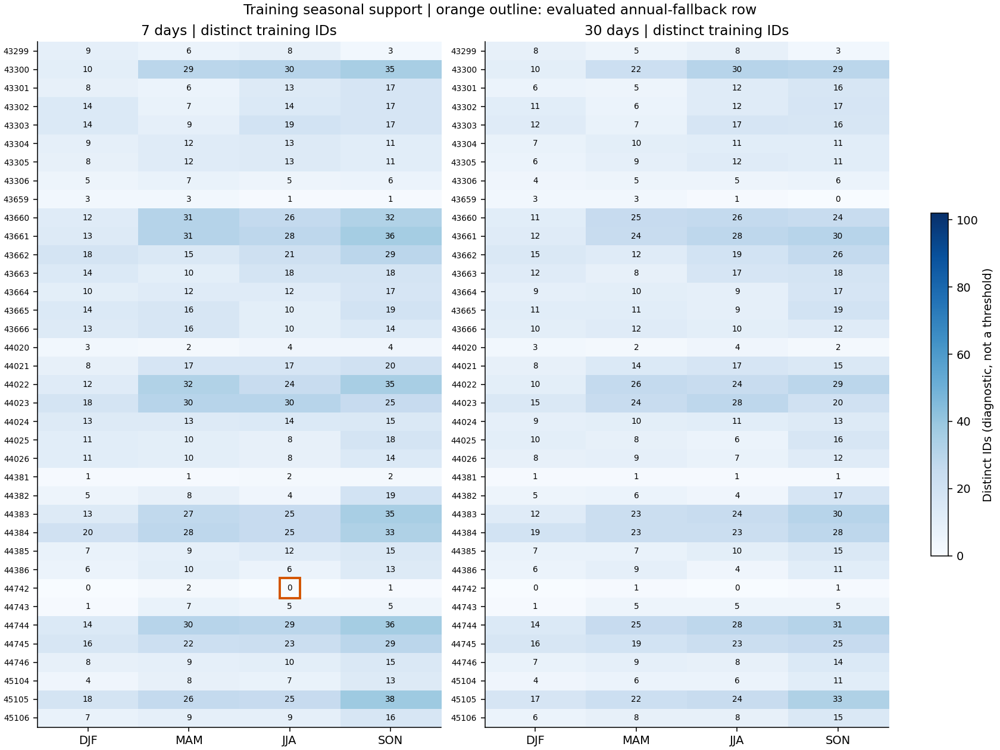
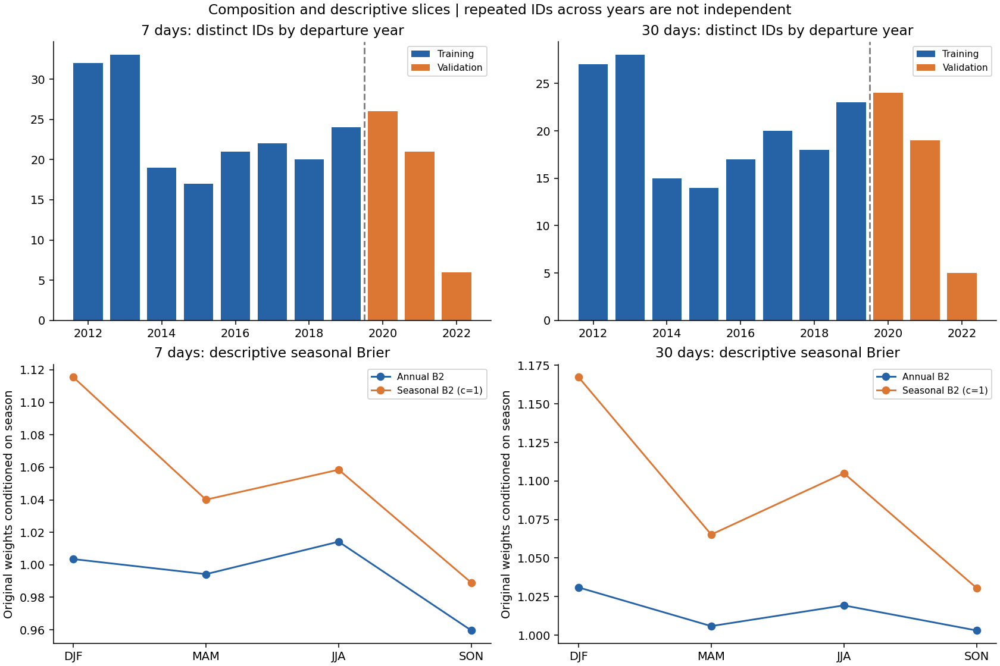
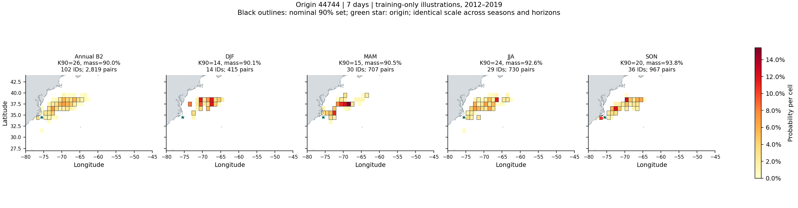
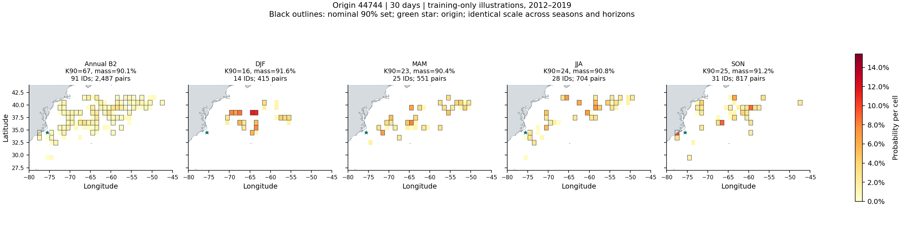
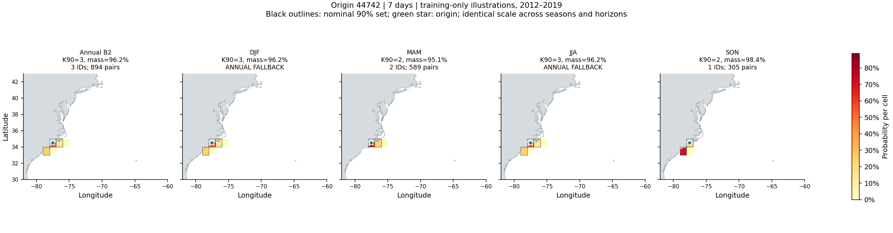
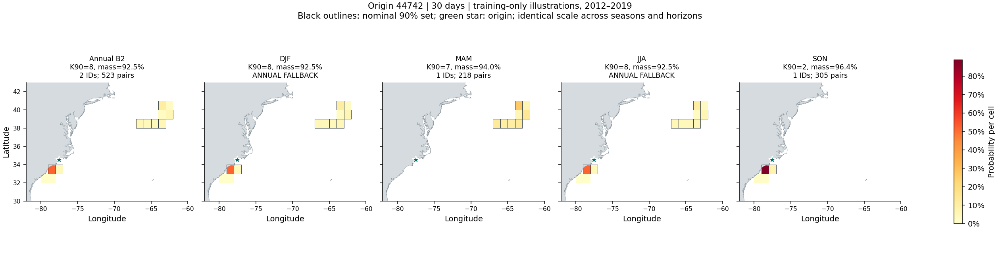
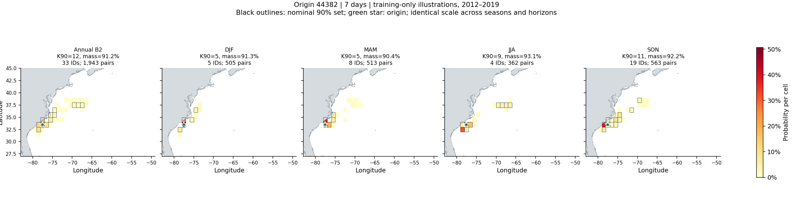
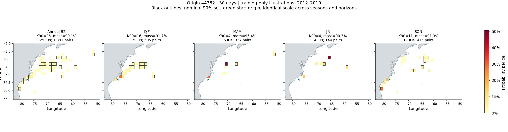

Step 4 E1 v2 · 2012–2019 training → 2020–2022 validation · Development evidence
7 days: NO_BRIER_POINT_GAIN; 30 days: NO_BRIER_POINT_GAIN
Brier: lower is better. H90: actual hit rate. K90: mean geographic cells in the nominal 90% region.
| horizon_days | model | brier | K90 (cells) | H90 (%) | fallback_pairs | Fallback weight (%) |
|---|---|---|---|---|---|---|
| 7 | B2Annual | 0.996224 | 16.305556 | 72.596819 | 0 | 0.000000 |
| 7 | B2SeasonalC1 | 1.055179 | 10.864406 | 50.341746 | 41 | 2.777778 |
| 30 | B2Annual | 1.017031 | 42.828571 | 38.810204 | 0 | 0.000000 |
| 30 | B2SeasonalC1 | 1.099687 | 16.819744 | 14.839925 | 0 | 0.000000 |
7 days: 41 cases, 0.121% of pairs but 2.778% of evaluation weight. 30 days: no cases. Both models have annual support for every validation case. Fallback cases remain in every primary score.










Full report · Metrics · Differences and decisions · Intervals · Season/year breakdowns
seasonal_conditioning_s4_e1_primary_20261102T005104_943407Z